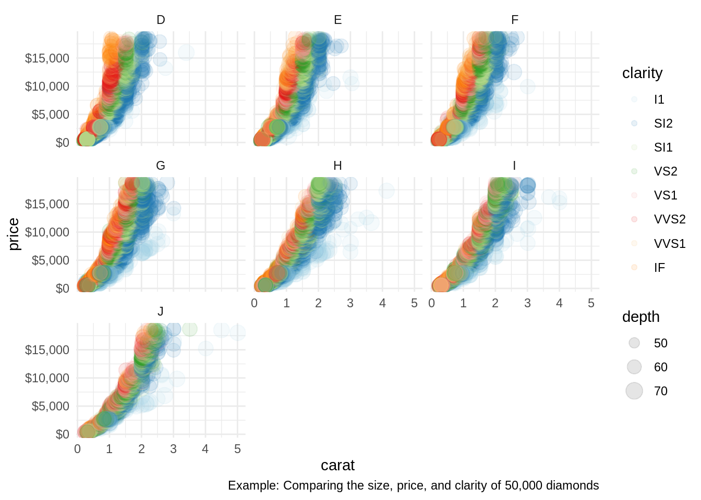

2 Hello Plot with Python
There’s lots of stuff to do in Python; let’s start with a plot!
2.1 Plotting the diamonds dataset
Our first plot is going to make use of the diamonds dataset that ships with plotnine.
We’ll import the necessary stuff from plotnine first. It seems like a lot of imports, but I made them all explicit so you can trace which parts of the code come from the plotnine library.
from plotnine import aes
from plotnine import facet_wrap
from plotnine import ggtitle
from plotnine import ggplot
from plotnine import geom_point
from plotnine import geom_bar
from plotnine import scale_color_brewer
from plotnine import theme_minimal
from plotnine import xlab
from plotnine import ylab
from plotnine.data import diamonds
import plotnine
plotnine.options.figure_size = (9, 6.5)
(
ggplot(
diamonds,
aes(
x = 'carat',
y = 'price',
color='clarity',
size = "depth"
)
)
+ geom_point(alpha = 0.1)
+ scale_color_brewer(type='qual', palette=3)
+ facet_wrap('~color')
+ theme_minimal()
+ xlab("Carat")
+ ylab("Price ($USD)")
+ ggtitle('Diamond Prices by Carat')
)
#> <ggplot: (8762052579338)>
#>
#> /opt/hostedtoolcache/Python/3.9.12/x64/lib/python3.9/site-packages/plotnine/utils.py:371: FutureWarning: The frame.append method is deprecated and will be removed from pandas in a future version. Use pandas.concat instead.
2.2 Typesetting Math with \(\LaTeX\) for fun and profit
We can use \(\LaTeX\) to show equations:
\[ \vec{F}_{net} = m\vec{a} \]
2.3 We can also run R
Below, we’ll generate a similar version of the plot we just made in Python, but we’ll make this one in R. We’ll need a few different packages to make it work.
As you look at the code anad the plot, ask yourself where you spot major differences from the Python version.
Can you spot any differences?
library(dplyr)
library(ggplot2)
library(magrittr)
library(scales)
diamonds %>%
ggplot(aes(carat, price, color = clarity, size = depth)) +
geom_point(alpha = 0.1) +
scale_color_brewer(type = 'qual', palette = 3) +
facet_wrap(~ color) +
theme_minimal() +
scale_y_continuous(labels = scales::dollar_format()) +
labs(caption = "Example: Comparing the size, price, and clarity of 50,000 diamonds")